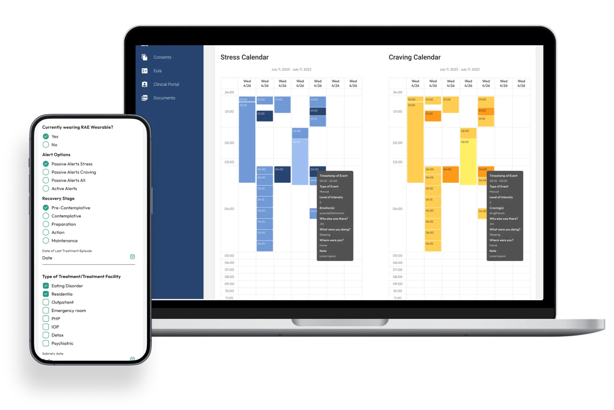
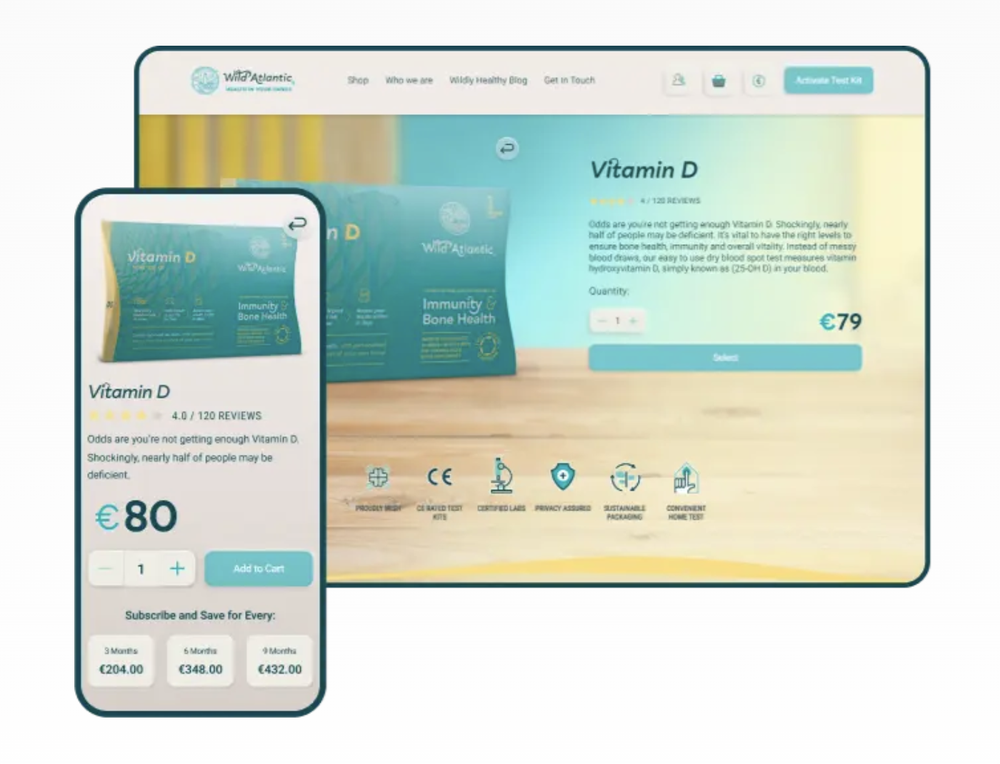
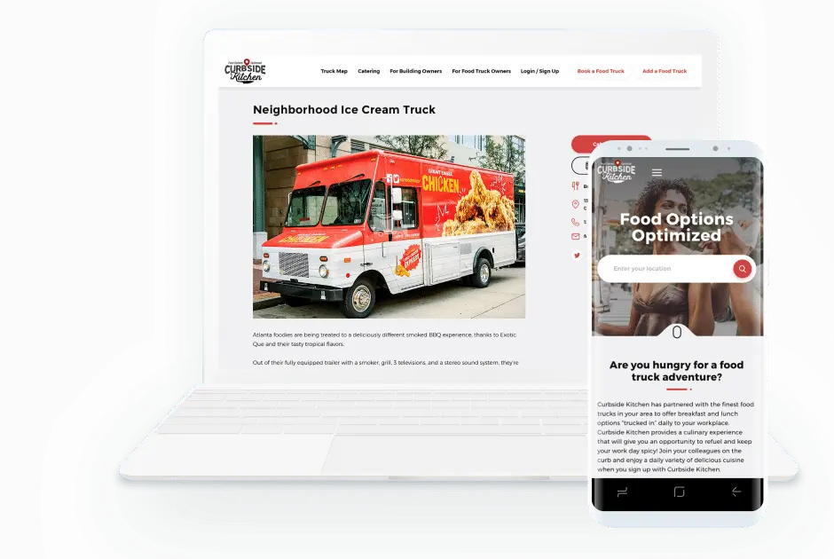
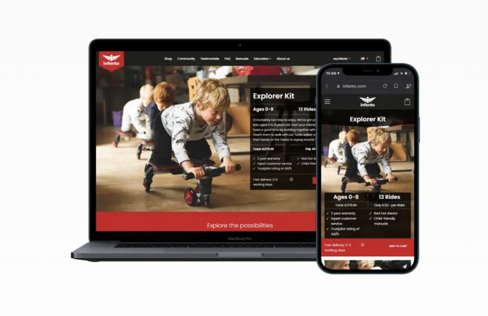

Attract Group
Four years of shipping client products end to end

Overview
Owned discovery to launch for 10+ client products across fintech, marketplace, and healthtech, leading cross-functional teams of up to 15 developers and specialists — back end, front end, mobile, QA, DevOps, designers and business analysts.
What I did
- Ran requirements, functional decomposition, and MVP scoping on engagements up to $400K
- Owned product and project backlog, including feature prioritization and task estimation, leading to on-time delivery of 90% of projects
- Controlled project delivery timelines, roadmaps, and resource allocation to ensure 0% budget loss
- Utilized Agile Scrum methodology in 3 large teams to maintain development efficiency
- Defined technical specs; aligned architecture with business goals
- Served as a mentor for junior managers, providing guidance and support
Projects I led
Here are some of the 10+ products I ran at Attract Group
Rae Health — stress and craving management on wearables
A healthcare platform that pairs patented biomarker wearables with mobile apps and a clinical web portal, so patients can see what triggers a craving and clinicians can adjust treatment on real data. The largest engagement I ran: 24+ months and a $200,000+ budget.
- Automatic detection of stress and craving events from wearable biomarkers, with manual entry so nothing goes unrecorded
- Calendar and statistics views that turn individual events into patterns a clinician can act on
- RAE Connect for caregivers and support networks, and a web clinical portal for reviewing patient data and tuning care plans
- Flutter and the Garmin SDK on mobile; Java, Spring Boot, PostgreSQL and AWS behind it

Wild Atlantic Health — home testing and supplement commerce
An Irish platform that closes the loop from a home blood test to the supplement that answers it: activate a kit, send the sample, get doctor-reviewed results, and buy what the results recommend. Six months, $80,000+.
- Third-party laboratory integration returning doctor-reviewed vitamin D and omega-3 insights within 7 working days
- A recommendation flow tying each test result to specific products, rather than a generic catalogue
- Stripe checkout, delivery tracking and reviews, with an admin panel for orders and content
- Laravel on the backend, React on the frontend, Flutter on mobile

Curbside Kitchen — a marketplace for food trucks
Office cafeterias are expensive to run. Curbside Kitchen lets property managers book food trucks instead, and gives truck owners a steady stream of bookings. A role-based marketplace for property owners, truck owners, office workers and administrators. Eleven months, $50,000–$100,000.
- A scheduler and event management flow that matches requests to suitable trucks without manual back-and-forth
- Stripe payments and invoicing, plus disputes, auto-refunds and rating management
- SMS and email campaigns through Twilio, Mailgun and ActiveCampaign; Google and Apple Calendar sync
- Reached 2,000+ completed events, 400+ more planned, 200 registered trucks and around 100 properties
- Django and PostgreSQL

Infento — e-commerce optimisation for modular ride kits
Six months of continuous improvement on a live WooCommerce store, aimed at retention and conversion rather than a rebuild. The brief was to keep shipping measurable improvements to an existing product.
- Rebuilt the customer account: purchase history, document downloads, and planning upgrades to a kit already owned
- Currency conversion for international buyers, automated invoicing, and order export for operations
- Organisation purchases for business customers, and Google Analytics instrumentation to steer the work
- WordPress and WooCommerce
